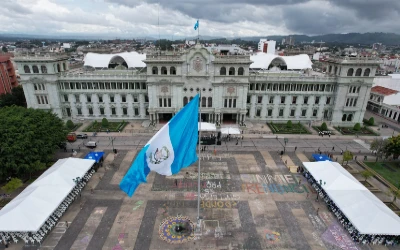
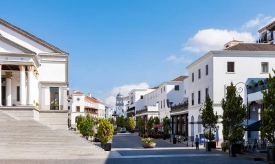
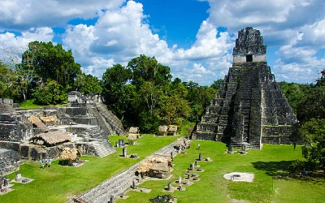
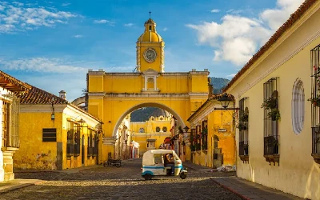
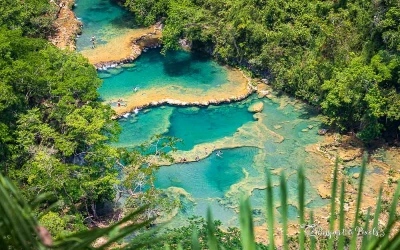

Guatemala City offers a mix of cultural, historical, and modern experiences. Like any city, it has its challenges, but it also provides opportunities to explore the unique character of Guatemala. Visitors can enjoy a vibrant urban environment, cultural attractions, and the warmth of the local people.
Culture and History
Guatemala City has a rich cultural and historical heritage. The city is home to numerous museums, galleries, and historical sites that showcase the country's Mayan and colonial past. The National Museum of Archaeology and Ethnology is particularly noteworthy, offering insights into Guatemala's indigenous cultures.
Architecture
The city's architecture is a mix of modern and colonial influences. While you can find modern skyscrapers and contemporary structures, there are also historic buildings such as the National Palace and the Metropolitan Cathedral. The contrast between old and new adds an interesting dimension to the city's aesthetic.
Guatemala Population
18,092,026
Yearly Change
1.39%
Places of Interest in Guatemala
Palacio Nacional
Cayala
Tikal
Lago Atitlan
Antigua Guatemala
Semuc Champey
Events
Christmas December 25th
Ney Year January 1st
Image Galery

Palacio Nacional of Guatemala

Cayala, Guatemala City

Tikal GuatemalaLago de Atitlan Guatemala

Antigua Guatemala

Semuc Champey Guatemala